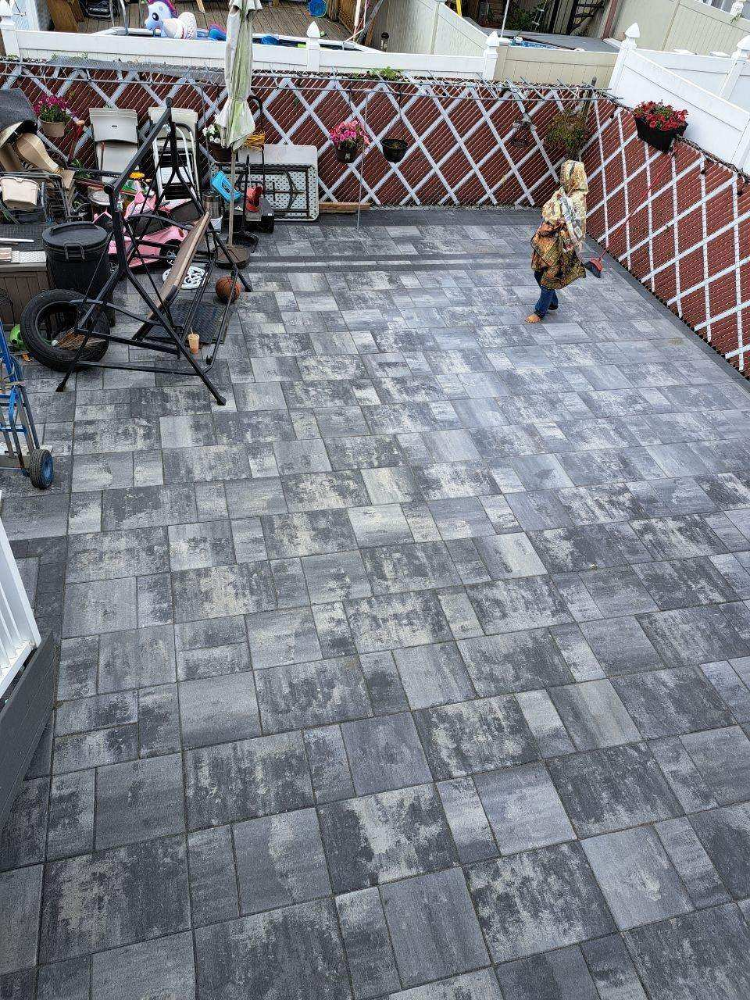

Flat roofs require specialized expertise and the right materials. At ST Roofing & Construction, we've installed and replaced hundreds of flat roofs across NYC — from small residential extensions to full multi-family rooftops. The photos below are from real jobs we've completed.
Real Flat Roof Job — Before & After


Flat Roof Systems We Install
- ✅ Torch Down (Modified Bitumen) — most popular for NYC homes and multi-family buildings
- ✅ EPDM Rubber Roofing — durable, low-maintenance, excellent for flat surfaces
- ✅ TPO Single-Ply Membrane — energy-efficient, reflective white membrane
- ✅ Built-Up Roofing (BUR) — multi-layer system for maximum durability
- ✅ Foamular Insulation — added under membrane for energy savings
What's Included in a Full Flat Roof Replacement
- ✅ Complete tear-off of old roofing material down to the deck
- ✅ Deck inspection and repair of any damaged plywood or boards
- ✅ Installation of insulation layer (Foamular R-5 or better)
- ✅ Base sheet and cap sheet installation
- ✅ Skylight and vent flashing as needed
- ✅ Parapet wall waterproofing and coping
- ✅ Full cleanup — we leave the property spotless
- ✅ Workmanship warranty
Flat Roof Maintenance & Silver Paint
Regular maintenance extends the life of your flat roof significantly. We apply Karnak silver aluminum coating (silver paint) to protect the surface from UV rays, heat and moisture — a cost-effective alternative to a full replacement when the deck is still in good condition.
Maintenance services include: surface cleaning, crack sealing, blister repair, and full silver aluminum coating. We also install and maintain roof drains and scuppers to prevent pooling water.
Terrace & Rooftop Tile Work
We also install paver tiles and waterproof membranes for rooftop terraces. The result is a functional, waterproof outdoor space that protects the roof below.

Flat Roof Repairs
Blisters, cracks, bubbles, pooling water or visible deterioration — we diagnose and fix flat roof problems before they become expensive interior damage. If you see a water stain on your ceiling, call us — we can usually inspect same day.
Insurance Claims Welcome
Storm and wind damage to flat roofs is often fully covered by homeowner's insurance. We offer free inspections and help you document the damage for your claim.
Free Flat Roof Inspection
We serve the Bronx, Queens, Brooklyn, Manhattan, Yonkers and Westchester County. Call us or fill out the form — we'll get back to you within 1 hour.